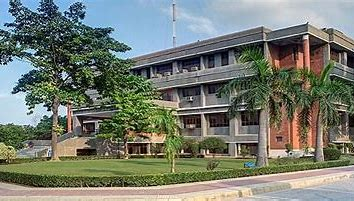
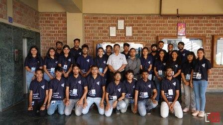

AJAY KUMAR GARG ENGINEERING COLLEGE
▻ Affiliated to DR.APJ Abdul Kalam Technical University, Lucknow, UP
▻ COLLEGE CODE - 027


SCALING THE ZENITH OF EXCELLENCE
Driven by its commitment to provide quality technical education, Ajay Kumar Garg Engineering College has become the best Engineering institution in Uttar Pradesh.

Ajay Kumar Garg Engineering College (AKGEC), Ghaziabad is affiliated to Dr. A.P.J. Abdul Kalam Technical University, Lucknow, and is approved by the All India Council for Technical Education. The college was established in 1998 and offers B.Tech courses in nine disciplines of Engineering namely Computer Science and Engineering, Information Technology, Computer Science, Computer Science & Information Technology, Computer Science and Engineering (Artificial Intelligence & Machine Learning), Computer Science and Engineering (Data Science), Computer Science and Engineering (Hindi), Artificial Intelligence & Machine Learning, Electronics and Communication Engineering, Electrical and Electronics Engineering, Mechanical Engineering and Civil Engineering. B.Tech programs in Computer Science and Engineering, Information Technology, Electronics and Communication Engineering, Electrical and Electronics Engineering and Mechanical Engineering are accredited by NBA. At the post graduate level, the College offers M.Tech in Electronics & Communication Engineering, Computer Science, Electrical and Electronics Engineering and Mechanical Engineering and the Master of Computer Applications course.
The college strives for excellence and has been consistently maintaining excellent academic results and placements. The college has the distinction of being the first and only college in UP to receive the Academic Excellence Award for the Best Engineering College in UPTU (now AKTU) from H.E. the Governor of UP for two successive years.
It is a matter of pride for the College to maintain a superlative overall academic performance over the years with a large number of students appearing in the University Merit List every year. The College has the honor of being awarded the Chancellor’s Award for highest marks in all B.Tech courses for five consecutive years in 2015-16, 2016-17, 2017-18, 2018-19 and 2019-20 since its inception in 2016.
Spread over 40 acre campus, AKGEC has excellent infrastructure with well-planned complexes for each department having spacious laboratories, class rooms equipped with state-of-the-art teaching aids, department libraries and faculty cabins. Departmental laboratories have the latest equipment and relevant licensed software. The college has state-of-the-art computing facilities with over 1400 computers networked through broadband for Internet access. The college has a fully automated central library with over 1,00,000 books, national/international journals including e-journals and multimedia resources.
 Wi-Fi enabled campus includes faculty residences and three boys and three girls hostels accommodating over 1500 students. Hostels have a library, TV room, canteen, general store, well equipped gymnasium as well as indoor and outdoor sports facilities.
Wi-Fi enabled campus includes faculty residences and three boys and three girls hostels accommodating over 1500 students. Hostels have a library, TV room, canteen, general store, well equipped gymnasium as well as indoor and outdoor sports facilities.
The college places special emphasis on collaboration with industries at various levels to groom the students to meet the industry standards. These include establishing collaborative facilities for student training in emerging multi disciplinary technologies and undertaking industry sponsored consultancy projects.
The college has the distinction of being the only Engineering College in the State of U.P. to have received approval from Department of Science and Technology (DST), Government of India, for establishment of Centre of Relevance and Excellence (CORE) in the field of Automation & Robotics. The program envisages a unique partnership between AKGEC and nine international industries to promote research, consultancy, project development and training in the emerging technological field of Automation and Robotics.
The college has set up India’s first Industrial Robotic Training Centre in collaboration with Kuka Robotics of Germany. The centre is equipped with standard training cell comprising of KUKA KR-16 Industrial Robot with required auxiliary equipment and KUKA KR-5 Arc Welding Robot with MIG welding equipment and torch. In addition to this, the centre offers expert level trainings in various state-of-the-art robotic applications including Robo milling, Robotic CMT, Robotic time twin welding, Robotic ultrasonic welding, Robotic vision system and spot welding etc. The centre also has a Robotics Computer Simulation Lab with software like Sim Pro and Sim Layout used to design, develop and simulate robotic operations for different industrial applications. The centre provides internationally recognized certification for its Basic, Advanced and Expert level training programs in this emerging technological area.
The College has established the first NI LabVIEW Academy in the state of U.P. in collaboration with National Instruments. The Academy is equipped with Laboratory Virtual Instrumentation Engineering Workband (LabVIEW) with built in functionality for simulation, data acquisition, instrument control, measurement analysis, data presentation and state-of-the-art Education Laboratory Virtual Instrumentation Suite (ELVIS) for training on concepts of Sensorics, Mechatronics and Controls. The Academy offers courses which provide opportunity to obtain three-part NI LabVIEW certification, namely CLAD, CLD & CLA, that imparts broad working knowledge of the LabVIEW environment. Till now Labview Academy has conducted more than 36 training courses and trained nearly 600+ engineers. The Academy has also achieved international recognized 215 CLAD Certification (out of 1900 in the country) and 18 CLD certifications (out of 241 in the country). To recognize the spectacular outcomes consistently since last three years, the academy has been selected as “Best LabVIEW Academy in India” amongest 93 academies in India. This award was given during ‘NI days 2016” conference held on 19th October, 2016 at Bangalore.
The College has also set up the first Centre of Competence in Automation Technologies in North India in collaboration with BOSCH Rexroth AG, Germany. The centre aims to train young engineering graduates of all disciplines to meet industry expectations and foster research in the multidisciplinary field of automation technologies. This centre has six laboratories equipped with state-of-the-art equipment to teach and train students and professionals in Industrial Hydraulics, Pneumatics, Sensorics, Drives & Control, CNC, PLCs and Mechatronics at par with international standards.
The PLM Centre of Excellence set up in association with SIEMENS aims to develop engineering professionals equipped with next generation technologies. The centre provides education to the next generation of designers/engineers on software including SOLIDEDGE, NX and CAD/CAM/CAE for digital product engineering, Team Centre for product life cycle management and Technomatix for digital manufacturing. It addresses diverse industry segments like automotive, industrial machinery, industrial automation, aerospace and shipbuilding.

To promote Industry oriented teaching learning, AKGEC has setup Centre for Integrated Automation in association with Automation Industry Association (AIA). This initiative of AIA is intended to share global quality learning processes from its vast pool of member companies with chosen Engineering Colleges of our country. Industry partners namely Siemens, Pepperel + Fuchs, Festo and B&R have taken the lead among all industry members of AIA to support the initiative. Main objective of this Centre is to encourage engineering students to take up this multidisciplinary field as a choice of their career and get hands-on experience with latest state-of-the-art integrated automation technologies as per industry expectations.
The College has also set up U.P.’s first Industrial Pneumatic Knowledge Centre (IPKC) in collaboration with Janatics, Coimbatore. The initiative of setting up IPKC reflects Janatics’ endeavour to contribute towards producing skilled workforce in Pneumatics which will help manufacturing sector to adopt to changes related to automation in substantive way. The IPKC also functions as National Small Industries Corporation (NSIC) Training-cum-Incubation Centre.